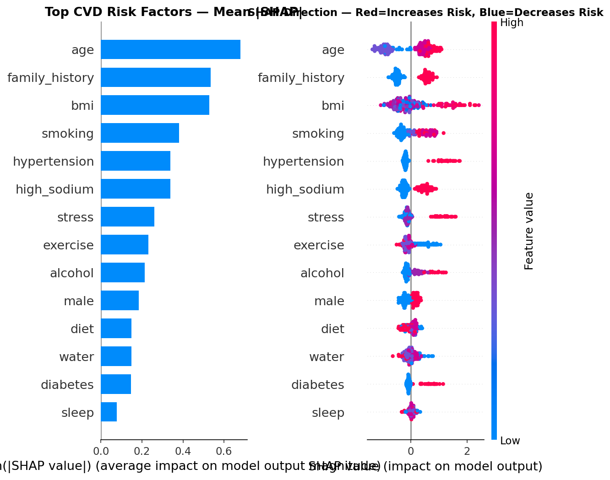

Abstract
Cardiovascular disease is the leading cause of death worldwide, yet systematic risk screening is scarce in primary care — and the classic risk calculators are linear, additive, and poorly calibrated for South Asian populations. We developed a hybrid framework that screens for cardiovascular risk using questionnaire-derived data only, with no laboratory tests or imaging.
The model combines a Graph Attention Network (GAT) — which represents patients and risk factors as a relational graph and learns non-linear, multi-order risk-factor interactions — with a calibrated soft-voting ensemble of XGBoost, LightGBM and Logistic Regression that fuses the learned graph embeddings with engineered tabular features. Trained and validated on real patient questionnaire data from a cardiovascular institute, the model achieved a cross-validated AUROC of 0.735 ± 0.028 and 91.8% sensitivity at a clinical screening threshold. Predictions are made interpretable through two complementary lenses — SHAP feature attribution and GAT attention weights. The manuscript is under review at IEEE Access.
My role on this project
I am the first author and lead developer. I designed and built the pipeline end to end:
- Feature engineering & graph construction. Turned raw questionnaire responses into binary risk flags and interaction terms, and built the bipartite patient–risk-factor graph.
- Modelling. Implemented and trained the Graph Attention Network and the calibrated soft-voting ensemble that fuses graph embeddings with tabular features.
- Evaluation & interpretability. Ran the stratified cross-validation and held-out testing, and produced the SHAP and attention-based explanations.
Background & objective
Cardiovascular diseases account for roughly a third of all deaths globally,¹ and the INTERHEART study showed that nine modifiable risk factors explain over 90% of heart-attack risk.² Yet routine screening is uncommon in Indian primary care, so many high-risk individuals are identified only after an acute event.
Traditional risk scores (Framingham, ASCVD, QRISK3)³⁴ are linear and additive — they cannot capture the non-linear, high-order interactions between clinical and lifestyle factors, and most machine-learning alternatives treat the data as flat tables, ignoring the relational structure among risk factors. The most accurate models are often opaque, which limits clinical trust.
Objective. Build an accurate, interpretable cardiovascular-risk screen that (a) uses only questionnaire data so it can run anywhere, (b) models risk factors relationally rather than as independent columns, and (c) explains every prediction for clinician trust.
Data & features
The model was developed on real patient questionnaire data collected at the Jayadeva Institute of Cardiovascular Sciences, Bengaluru — entirely self-reported clinical and lifestyle items, with no laboratory or imaging inputs. From the raw responses we engineered 13 binary risk flags (e.g., hypertension, diabetes, smoking, family history, physical inactivity) plus interaction terms that expose combinations known to compound risk. Class imbalance — most respondents are lower-risk — was addressed with Borderline-SMOTE⁸ so the model is not biased toward the majority class. Evaluation used 5-fold stratified cross-validation with a held-out test set.
Methods
The pipeline has two parallel tracks that are then fused: a relational track (the graph network) and a tabular track (engineered features), combined by a calibrated ensemble.
The graph track — Graph Attention Network
Patients and risk factors are represented as a bipartite graph: each patient node connects to the risk-factor nodes that apply to them. A two-layer GAT⁵ with 4-head attention learns, for each patient, an 8-dimensional embedding that captures non-linear, multi-order interactions between risk factors — for example, how smoking interacts with hypertension and family history together, rather than as three separate columns. The GAT is trained by self-supervised link prediction, so it learns structure without needing extra labels.
The tabular track & fusion
In parallel, the engineered risk flags and interaction terms are retained as tabular features. The 8-dimensional graph embedding is concatenated with these into a single fused representation, giving the downstream model both the relational view (from the graph) and the explicit feature view (from the table).
The ensemble
A calibrated soft-voting ensemble combines three complementary learners on the fused features. Soft voting averages the predicted probabilities (weighted), which is more robust than any single model.
| Model | Weight | Why it's included |
|---|---|---|
| XGBoost⁶ | 0.45 | Strong gradient-boosted trees; captures sharp non-linear splits. |
| LightGBM⁷ | 0.45 | Fast, leaf-wise boosting; complements XGBoost with different error modes. |
| Logistic Regression | 0.10 | A calibrated linear anchor that stabilises probabilities at the extremes. |
The weights were tuned on the validation set, not taken from a paper — the two boosters carry most of the signal, with a light linear anchor for calibration.
Evaluation
Performance was measured with 5-fold stratified cross-validation plus a held-out test set, reporting AUROC, sensitivity, specificity and F1. The operating threshold was set low (0.17) to prioritise sensitivity — in screening, missing a high-risk patient is the costly error.
Results
| Metric | Value |
|---|---|
| Cross-validated AUROC | 0.735 ± 0.028 |
| Held-out test AUROC | 0.709 |
| Sensitivity at screening threshold (0.17) | 91.8% |
The model meaningfully outranks chance and, at the chosen operating point, catches the large majority of high-risk individuals — the behaviour a screening tool needs. The relational GAT track added signal over the tabular features alone, supporting the central hypothesis that risk-factor interactions carry information that flat models miss.
Interpretability
Two complementary explanations accompany every prediction: SHAP⁹ attributes the risk score to individual features (how much each factor pushed the prediction up or down), while the GAT attention weights reveal which risk-factor relationships the graph leaned on. Together they let a clinician see why a patient was flagged, not just that they were.

fig_cvd_shap.png beside this page.)Why it matters
Because it needs only a questionnaire, this screen can run on a phone, by a health worker, anywhere — no blood draw, no clinic equipment. It models risk relationally rather than additively, which fits how real risk compounds, and it stays interpretable, which is what earns clinical trust. The intended use is early triage: flag who should be prioritised for a clinical workup, well before an acute event.
Limitations & next steps
- Single-source, self-reported questionnaire data — external and prospective validation on independent cohorts is the key next step.
- Self-report introduces recall and reporting bias that no model can fully correct.
- Class imbalance was handled with Borderline-SMOTE; results should be confirmed on a naturally distributed external test set.
- The screen estimates risk; it does not diagnose, and the clinician's judgement remains the decision-maker.
Next: external multi-site validation, prospective evaluation, probability calibration, and integration into a lightweight screening front-end.
References
- World Health Organization. Cardiovascular diseases (CVDs) — fact sheet. 2021.
- Yusuf S, Hawken S, Ôunpuu S, et al. Effect of potentially modifiable risk factors associated with myocardial infarction in 52 countries (the INTERHEART study). Lancet. 2004;364(9438):937–952.
- D'Agostino RB, Vasan RS, Pencina MJ, et al. General cardiovascular risk profile for use in primary care: the Framingham Heart Study. Circulation. 2008;117(6):743–753.
- Hippisley-Cox J, Coupland C, Brindle P. Development and validation of QRISK3 risk prediction algorithms. BMJ. 2017;357:j2099.
- Veličković P, Cucurull G, Casanova A, et al. Graph Attention Networks. Proc ICLR. 2018.
- Chen T, Guestrin C. XGBoost: A scalable tree boosting system. Proc KDD. 2016:785–794.
- Ke G, Meng Q, Finley T, et al. LightGBM: A highly efficient gradient boosting decision tree. Proc NeurIPS. 2017.
- Han H, Wang WY, Mao BH. Borderline-SMOTE: a new over-sampling method in imbalanced data sets learning. Proc ICIC. 2005:878–887.
- Lundberg SM, Lee SI. A unified approach to interpreting model predictions (SHAP). Proc NeurIPS. 2017.